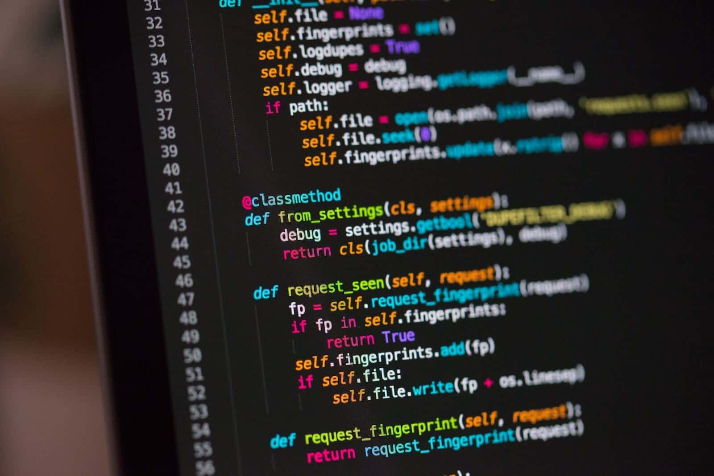

Un compilador es un programa que traduce código fuente escrito en un lenguaje de programación a código máquina que puede ser ejecutado por una computadora.

Fases de un compilador
Análisis léxico
Análisis sintáctico
Análisis semántico
Generación de código intermedio
Optimización de código
Generación de código máquina
Ejemplo de código en C
#include <stdio.h>
int main() {
printf("Hola, mundo!\n");
return 0;
}